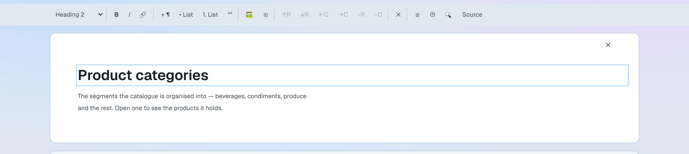
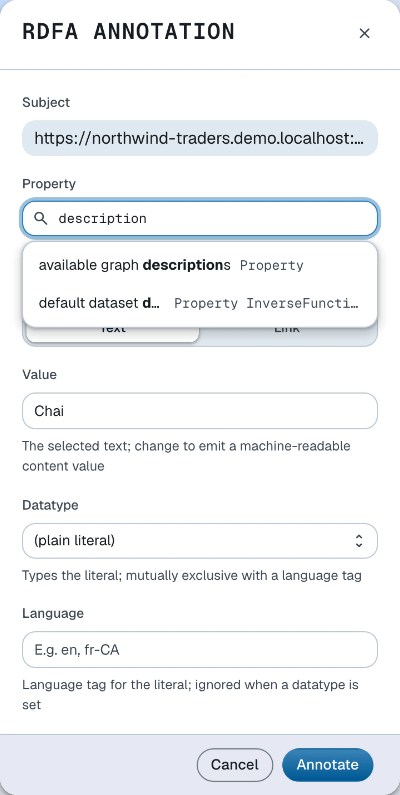

Edit content
Edit XHTML documents in-place and annotate text with RDFa
XHTML content blocks in LinkedDataHub are living documents: authenticated users with write access can click directly into the content to edit it, apply rich-text formatting, and annotate any span of text with RDFa. Words and phrases link to terms in the Knowledge Graph without leaving the page.
Annotating the word Chai in a Northwind welcome text with the product it names produces markup like:
<p>Our bestselling tea is
<span about="https://localhost:4443/products/1/#this" property="https://schema.org/name">Chai</span>.</p>
which, read as RDFa, yields the triple
<https://localhost:4443/products/1/#this> <https://schema.org/name> "Chai" .
The prose itself becomes part of the Knowledge Graph.
Entering edit mode
Click anywhere inside an XHTML block to enter edit mode. The block gains a focus outline and the editor toolbar appears below the action bar. Clicking outside the block (including the surrounding page margins) returns the block to read mode.
Edit mode is only available to authenticated users who have write access to the document. The block remains read-only for all other visitors.
Editor toolbar

The toolbar appears at the top of the page when an XHTML block is active. It provides standard rich-text controls grouped by function:
- Block type
- Paragraph, Heading 1–3, Preformatted
- Inline formatting
- Bold, Italic, Link
- Blocks
- Paragraph, Bullet list, Numbered list, Quote
- Inserts
- Figure, Table
- Table operations
- Add/remove row or column (active only when the caret is inside a table cell)
- View
- Table of contents, Subject properties, Find and replace, Source view of the XHTML markup
Toolbar buttons reflect the current caret position: the block-type selector and toggle buttons (Bold, Italic etc.) update as you move the cursor.
RDFa annotations

RDFa annotations embed machine-readable RDF statements directly in the XHTML markup. A single annotation expresses a statement of the form subject — property — object, where subject and object are IRIs or typed literals drawn from your Knowledge Graph.
Adding an annotation
- Enter edit mode by clicking inside the XHTML block.
- Select the text you want to annotate.
- Right-click the selection to open the annotation dialog.
- In the annotation dialog, fill out the fields:
Annotation dialog fields Field Description Property Start typing to search ontology terms; select one from the typeahead dropdown Value Pre-filled with the selected text; change it to emit a different machine-readable value (e.g. a canonical form) Expand Type, subject & object for the advanced fields:
Advanced annotation fields Field Description Type (typeof) Assign an rdf:typeto the annotated spanSubject (about) Override the in-scope subject IRI Object (resource) Make the object a resource IRI instead of a literal Datatype Type the literal (e.g. xsd:date)Language Tag the literal with a BCP 47 language code - Click Annotate. The selected text is wrapped in a
spancarrying the appropriate RDFa attributes.
Editing an existing annotation
Right-click an already-annotated span to reopen the dialog pre-populated with the current values. Change any field and click Annotate to update, or click Remove to delete the annotation while keeping the text.
Annotation visibility
While a block is in edit mode, annotated spans are outlined so you can see at a glance which text carries machine-readable meaning.
Saving changes
Changes are saved automatically when focus leaves the editor — clicking outside the
block or tabbing away serializes the current XHTML content as an XMLLiteral and sends a SPARQL Update PATCH request that replaces the stored value. There is no separate Save button.
A save only happens when the content actually changed: leaving the editor without edits restores the block as it was, without rewriting the document or adding a version.
Moving focus to the editor's own controls (the toolbar, the breadcrumb or the find bar) does not trigger a save; only leaving the editor region does.
Tab groups
Some pages present alternative paths — such as user interface and command line instructions — as switching tab strips. In edit mode the switching is suspended: every panel is shown stacked and can be edited in place, and the markup is preserved exactly on save. The tab strip itself is editable text, so take care not to alter the tab buttons unintentionally.
Creating a new tab group is not yet supported in the editor — that markup is authored over the HTTP API, e.g. with ldh put from the command line interface.
Viewing the XHTML source
Click the Source button in the toolbar to open a read-only view of the serialized XHTML markup, including all RDFa attributes. This is useful for verifying the exact markup that will be stored or for copying fragments into other documents.
Read more about content blocks, or manage them from the command line as shown in the Create content guide.